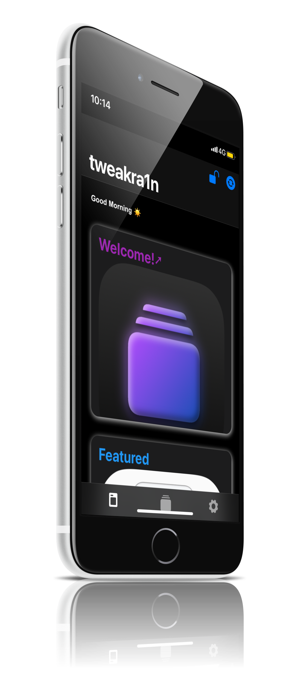
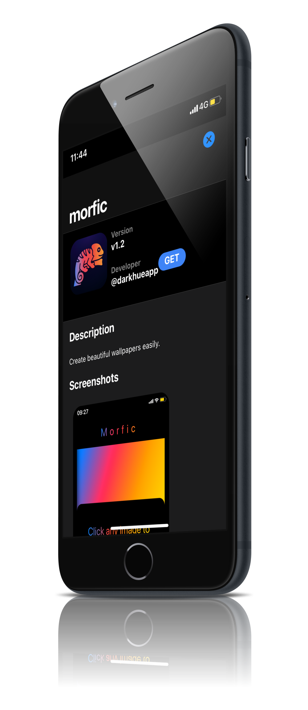
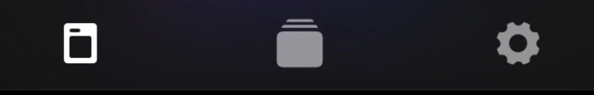

Your new favorite AppStore
GETglobe
WebClippaperclip
*To install a WebClip, go to Settings>General>VPN,DNS & Device Management
Made to be as perfect as possible
Similar design to the official AppStore
tweakra1n is the safest place to get tweaks,highly secured and it also respects your privacy,no cookies or sign up required
It comes with a native iOS design,built in Framework7,it has custom icons also

Everything you need is right there
Owner and Developer

Contributors